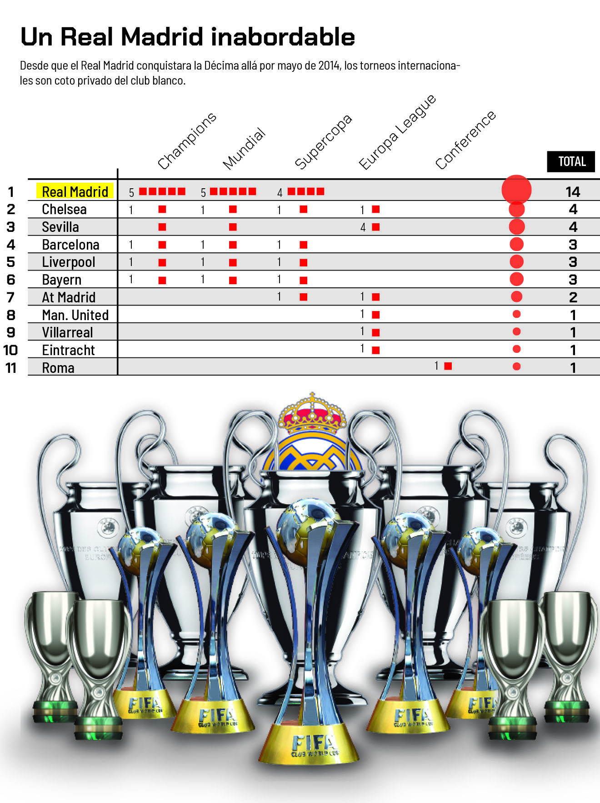
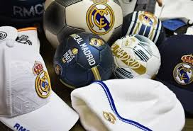

El Real Madrid fue fundado en 1902 y desde sus inicios mostró una ambición competitiva extraordinaria.
Durante los años 50, con Alfredo Di Stéfano como figura principal, el club dominó Europa.
El equipo se convirtió rápidamente en un símbolo del fútbol internacional.
A lo largo de las décadas ha vivido etapas gloriosas y reconstrucciones estratégicas.
El estadio Santiago Bernabéu se convirtió en uno de los templos del fútbol mundial.
Hoy en día, el club mantiene su identidad histórica combinada con modernidad.
Logros

El Real Madrid es el club con más Champions League en la historia del fútbol.
Ha conquistado numerosas Ligas españolas, Copas del Rey y Supercopas.
En el siglo XXI logró una histórica racha de tres Champions consecutivas.
También ha sido reconocido como el Mejor Club del Siglo XX por la FIFA.
Sus vitrinas reflejan décadas de excelencia y dominio competitivo.
Cada generación ha aportado títulos que consolidan su grandeza mundial.
Legado
El legado del Real Madrid está marcado por leyendas como Di Stéfano, Raúl y Cristiano Ronaldo.
El club ha sido cuna de grandes talentos y referentes internacionales.
Su mentalidad ganadora es parte fundamental de su identidad.
Ha influido en la evolución táctica y competitiva del fútbol europeo.
La cantera y su filosofía deportiva siguen formando futuras estrellas.
El escudo blanco representa excelencia, ambición y tradición.
Marketing

El Real Madrid es una de las marcas deportivas más valiosas del mundo.
Su estrategia de marketing combina fichajes galácticos y expansión global.
Posee millones de seguidores en redes sociales en todos los continentes.
Ha desarrollado alianzas estratégicas con grandes marcas internacionales.
El nuevo Santiago Bernabéu representa innovación y modernidad comercial.
Su impacto trasciende el deporte y alcanza el entretenimiento global.